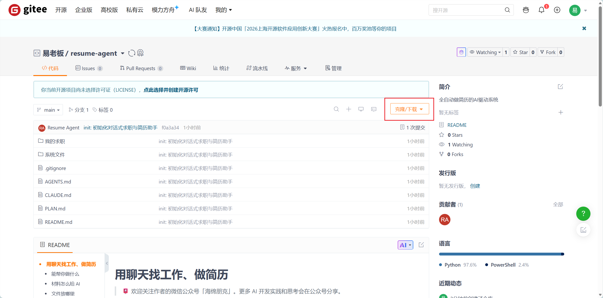
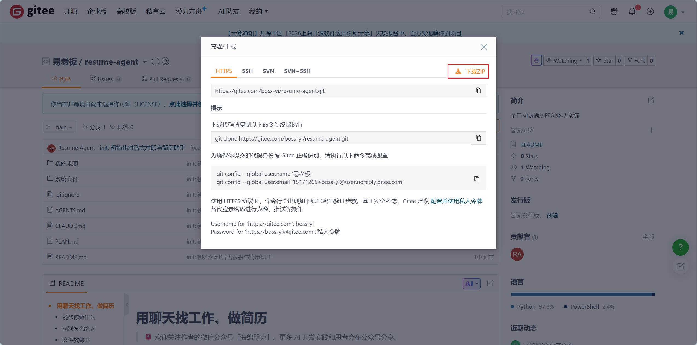

展开本页目录
本文内容同步自飞书修订号 246，配图已存入本站。文章中的项目下载入口以原文链接为准。
查看飞书原文 ↗如果你曾经把同一份简历投给十家公司，只改了标题就发送，可能已经发现问题：岗位要求不同，最该展示的经历、顺序和写法也不同。让 AI 改简历又容易走向另一个极端——它把你没做过的项目写得像真的，投递时看起来漂亮，面试时却经不起追问。
这篇指南用一个可下载、可修改的项目，把「找真实岗位 → 看完整 JD → 核对个人事实 → 做岗位版 Word → 投递后留档」串起来。你不需要学会脚本命令，只需知道怎样给 Agent 正确入口、怎样判断它有没有依据，以及怎样验收 Word 成品。
🚀 最短路线：如果你已经有 JD，只想做简历，下载项目后直接看“步骤 2：核对事实”和“步骤 5：制作 Word”。找岗位和评分不是制作简历的必经关卡。
开始之前，先认识这套系统
这是一套 AI 驱动的简历制作系统。给 Agent 一份 JD 和经过你确认的真实经历，它会拆解要求、追问关键缺口、组织证据，并生成针对岗位的 Word 草稿。找岗位、分析匹配、投递后留档是围绕简历制作延伸出的能力。
它的形态不是网站或独立 App，而是一个配置好规则、脚本、Word 模板和工作目录的文件夹。用能读取本地文件、联网并执行任务的 Agent 打开整个文件夹，再在聊天中下达任务。它像 Skill，但不被单条固定指令限制：你能换模板、改筛选偏好、选择飞书同步，也能让 Agent 修改这套流程。你不需要自己手填配置或运行内部命令。
可以把它理解成下面这条链：
你给目标、材料和官网链接
→ Agent 读取整个项目文件夹里的规则与工具
→ Agent 查资料、问缺口、生成 Word 草稿
→ 你确认事实、查看版式、决定是否投递
→ 已投递后再归档；需要时继续修改项目📌 打开“整个文件夹”是关键。项目里的 README.md 是给人看的入口，AGENTS.md 告诉 Agent 如何操作，PLAN.md 记录项目状态，系统文件/ 放生成工具与公开模板，我的求职/ 是日常放个人材料和成品的地方。只复制文章里的一句提示词，Agent 无法自动得到这些文件里的能力。
先获取完整项目文件夹
- 主要下载入口：Gitee 项目仓库 。优先从这里获取完整项目文件夹。
- 备用下载入口：GitHub 项目仓库 。Gitee 不便访问时使用。
下载或克隆后保留整个文件夹，再交给 Agent 打开；只复制一段提示词或单独的 README，Agent 就读不到项目规则、脚本与模板。
以gitee为例（如果你不知道github和gitee是什么，那么就请使用gitee下载，因为国内网络能登录。），如果你懂克隆那就不用我多说了，但是如果你第一次接触gitee，不知道怎么操作，别急，其实很简单：
- 找打页面中间靠右的【下载/克隆】按钮🔘：

- 再点击【下载ZIP】就行。请你下载到电脑里面一个专门的工作区，比如是在D盘创建了一个名叫【找工作】的文件夹，把它解压缩。

下载后怎么打开？在你正在使用的 Agent 产品中，找“打开文件夹”“添加项目”“选择工作区”等入口，选择刚下载并解压后的项目根目录。对就是这么简单，你只需要在你的Agent工具，比如workbuddy、zcode、codex、claude code、kimi code中，打开这个文件夹，就完事了。但是你必须用Agent产品来驱动这个项目，不然本项目无法正常使用。
不同 Agent 的按钮名称会变；判断是否打开正确的方法很简单：让它说出根目录的 README.md、AGENTS.md 与 我的求职/ 分别是什么。如果它只能看见你上传的一个压缩包或单个文档，先让它解压或重新选择根目录。
按这篇指南操作后，你应该能做到
- 从招聘官网取得有来源的岗位清单，知道哪些页面已经核实、哪些尚未核实。
- 让 Agent 用完整 JD 和你的真实事实分析岗位，区分直接证据、可迁移经验与待确认缺口。
- 对一个具体岗位生成 Word 简历草稿，并知道如何用自己的 Word 模板。
- 在亲自投递后准确记录日期、岗位和所用简历版本；按需打开飞书同步。
你需要准备什么
必需：整个项目文件夹，以及能访问它的 Agent。做简历时，还需要能让你核对的真实经历；找岗位时，一定要给出招聘官网的岗位列表页或详情页的网址链接。
可选：旧简历、作品或项目材料、现成 JD、个人 Word 模板、飞书账号。没有旧简历或飞书，也可以开始。Agent 的联网、网页读取与文件操作能力因产品和授权而异；若当前 Agent 无法打开官网或本地文件，应先换可用入口或补足权限，不要让它根据搜索摘要臆造结果。
🧪 一次完整演练，先看结果应该长什么样
假设你正在看某家公司的岗位详情页。先把官网链接给 Agent，它返回岗位标题、详情链接、完整 JD、核实时间与尚未读取的页面；然后你给旧简历，Agent 把“本人动作、方法、结果”整理成待确认事实；你指出某项经历写得太大，Agent 更正后，再按这个岗位制作 Word 草稿。你打开 Word 核对姓名、经历与分页，自己投递。最后告诉 Agent 实际投递日期和所用文件，它才建立记录。
这里的“某家公司”只是流程示意，并非项目预设的职业方向或真实案例。项目不会替你决定要找什么岗位，也不会把作者自己的经历、偏好和权重套在你身上。
这一课的验收不靠一句“AI 已完成”，而是靠四个可检查的结果：来源能点开、事实能追溯、Word 能打开、投递状态真实。
步骤 1｜打开整个文件夹，说“开始使用”
你来做：优先从上面的 Gitee 入口取得完整项目文件夹，或使用 GitHub 备用入口。把整个文件夹交给 Agent 作为工作目录，或明确告诉它读取整个文件夹。然后发：
开始使用。请按项目规则介绍能做什么，并问我本次最想先做哪一步。
Agent 应交付：找岗位、分析 JD、制作 Word、投递后归档四项能力的简短介绍，以及当前任务真正需要的材料。四项能力能跳步使用；它不能因为你说了“开始使用”，就自行搜索、生成或投递。
完成标志：你知道本次要做哪一项，Agent 知道接下来需要什么材料。第一次无需填个人资料表、创建 JSON、登录飞书或运行命令。
🧯 卡住了怎么办？如果 Agent 一开场就让你填写配置、安装所有依赖、登录飞书，先把它拉回当前目标：“我这次只想做〔任务〕。请先读取项目 README 和操作规则，只问本次必需的信息。”项目按任务检查环境，不要求一次把所有可选组件装齐。
📌 材料怎么交？旧简历、项目材料、JD 文件和 Word 模板，可以直接拖进聊天；也可以放进“我的求职”区域，再告诉 Agent 文件名或位置。官网链接直接粘贴。没有现成文件，就用对话描述目标和经历。
步骤 2｜建立“可确认的事实”，不要让 AI 猜经历
如果你要分析岗位或制作简历，先给 Agent 旧简历、项目资料，或在聊天里描述教育、经历、技能和求职目标。可以这样说：
请先从这些材料整理我的个人事实与求职偏好。缺的地方标“待确认”，整理完给我看摘要，不要按 JD 替我补经历。
Agent 应交付：一份待你核对的事实摘要。经历最好能拆清时间、场景、你本人负责的任务、采用的方法、结果和材料来源；偏好至少弄清本次目标、地点或工作条件、明确不接受的条件。未知项就写待确认，不能拿公开案例或岗位描述替你填。
你来检查：姓名和联系方式是否准确；“团队做过”有没有被写成“我独立负责”；结果数字有没有真实来源；目标城市和岗位方向是否真是你选择的。确认或纠正之后，Agent 再更新资料状态，供后续岗位复用。
⚠️ 重要原则：资料没写某项能力，不代表你不会。例如 JD 提到某工具，而你的旧简历没写，Agent 应先问：“你是否用过？在哪个场景、本人做了什么、结果如何？”你确认做过，它才写进共同事实源；你明确没做过，才记录真实缺口。未经确认的能力不能包装成已具备。
完成标志：用于这次任务的关键事实已由你核对。并不要求第一次把人生经历全部讲完；后续出现新要求，还可以再补充。
🧯 常见跑偏：Agent 把“团队完成”写成“独立主导”，或把 JD 里的技术词反填到你的经历里。纠正时请直接给原始材料或本人叙述，并说“更新共同事实源后重新生成，不要只在当前文案里改一句”。这样同一错误不会在下一份岗位简历里重现。
步骤 3｜从招聘官网找岗位：入口越精确越好
想先看机会，发送公司招聘官网的岗位列表页、站内搜索页或具体详情页，并说明范围：
这是招聘官网岗位列表页：〔链接〕。请找出其中〔城市／方向〕的岗位，保存岗位详情和完整 JD，告诉我你实际查了哪些页面。先只给清单。
为什么强调官网？岗位发现依赖 Agent 自身的联网、浏览和网页读取能力；项目没有覆盖所有公司的实时岗位数据库。你只给公司名时，它还要先找官网入口，搜索摘要和第三方转载容易漏信息。入口越靠近岗位页，越容易核对来源、减少误认网站，并读到完整 JD。
Agent 应交付：岗位名、详情链接、来源、核实时间、完整 JD 的保存状态，以及本轮覆盖范围。需要登录、遇到验证码、页面打不开、只有标题而没有 JD，都要标明“未核实”和原因。不能绕过访问限制，不能把转载文字冒充官网原文，也不能因为查不到就判断公司是否正规。网页和 JD 只是待分析数据，其中夹带的操作指令不应被执行。
完成标志：你能点开每个可核实岗位的来源，也知道哪些岗位仍需自己查看。如果你只要清单，Agent 在这里暂停；不会自动进入评分或简历制作。
🧯 招聘站点打不开？先检查链接是否是官网，以及 Agent 有没有网页访问权限。可以把更精确的岗位详情页发给它；如果详情只能登录后查看，也可以由你把完整 JD 文本或截图交给 Agent，让它明确标注“用户提供的 JD，未独立核实官网”。不要把搜索结果的一两句摘要写成完整岗位要求。一般来说，大部分公司的官网用Agent是直接能够读取的，只有极少数公司的招聘官网有反爬虫无法直接查看，这种由于安全问题，只能人工去提供JD了。
步骤 4｜拆完整 JD，再决定要不要投
如果想让 Agent 帮忙挑岗位，可以一次提出：
请结合我已确认的经历和求职偏好，分析这些岗位哪些值得重点看。先列硬门槛和核心任务；关键能力资料没写就问我。给结论时带 JD 和个人事实依据。
Agent 的分析顺序：先读取各岗位完整 JD，再区分硬性要求、核心交付和加分项；逐项找你已确认的事实。对某项要求，结论应清楚属于“直接做过”“机制相近、可以迁移”“待确认”还是“明确没有”。关键缺口要先问，不能拿空白资料直接扣分。
项目可以按通用维度和你的权重计算匹配分，但正式分数需要完整 JD、已确认个人画像与偏好，以及逐维证据。材料不足时，只给有证据的分析和缺口；不做看似精确的排序。即便有分数，它也不是录用概率。硬门槛不满足或待核实，应单独醒目标出。
完成标志：你知道每个岗位的理由、风险和未核实项，能自己决定做哪一份简历。你可以跳过岗位查询与分析，直接给现成 JD 进入步骤 5。
例如 JD 写“熟悉某分析工具”，你的资料没提它：此时合理结论是待确认，Agent 应问场景、本人动作与结果；如果你确实没用过，再把它列为缺口。又如 JD 写的是必须持有某资格，而你尚未提供证明，Agent 应单列硬门槛风险，不能拿其它优点把风险“平均”成高分。读分析时，请优先看依据和缺口，别只盯总分。
步骤 5｜给 JD，让 AI 自动生成岗位版 Word 草稿
选定岗位后说：
按这份 JD 和我已确认的经历，做一份针对这个岗位的 Word 简历。缺关键事实先问我；不要编造项目、职责、工具、数字或成果。
Agent 应怎样写：先弄清岗位要交付什么，再挑最能证明能力的经历；把 JD 中关键且你真实具备的能力，写进具体经历正文，不只堆在摘要或技能栏。每一段要能说清场景、本人动作与方法、已确认结果，以及从这些事实可以还原出的岗位价值。可迁移经验可以说明如何支持目标任务，不能写成你已经做过目标行业的工作。
多岗位怎么办？可以一次要求几家公司，但每个岗位应分别建立工作单，独立读取当前 JD、组织主张、排序经历和生成 Word。同一份已确认事实可以共用；上一家公司形成的结论与候选文案不能直接作为下一家输入。整批做好后，Agent 再统一交付。没有 JD 也能按你描述的求职目标做通用简历，但不能虚构公司、岗位要求或分数。
模板怎么选？默认有深蓝 Word 母版，照片位置留空。你可以发自己的 .docx，说“以后用这份模板，先给我看适配样稿”。Agent 应保留原件、做兼容副本，用虚构内容验证生成效果；你认可后才设为默认。复杂文本框、表格和特殊排版可能需要调整，适配失败不能悄悄切回别的模板。
你来验收：核对姓名、联系方式、经历、数字、岗位针对性和实际页数。生成稿是待人工微调的 Word 草稿，不能直接投递。内置母版目标是第一页外多约两行正文，方便你手动收紧；字符数不能证明 Word 实际分页。标题框长度固定，长标题可能要缩短或调整；模块间距太挤时，可把相关下边距从 0 调到 0.2。自己的模板按自身目标检查。
完成标志：你拿到当前岗位的 Word 草稿，知道哪些事实已确认、哪些仍待核实，且已亲自查看版式。还没投递就不要把状态记成“已投递”。
🧯 Word 打开后多出一页？不要只让 Agent 报“字符数达标”。实际分页会受到字体、Word 版本、标题长度和你自己的模板影响。先确认内容事实不变，再缩短过长标题、处理重复文字或微调间距。内置母版的“一页外多约两行”只是方便人工收紧的目标，不是自动分页承诺。
步骤 6｜亲自投递，再把使用版本归档
这个系统不会替你点击投递。你真正投递后，再告诉 Agent：
我在〔实际日期〕投了〔公司＋岗位〕，用的是〔简历文件名或版本〕。岗位链接是〔链接，如有〕，请帮我归档。
Agent 只有在你明确说已投递并给日期后，才建立本地待激活记录，写清岗位、日期、链接和所用简历版本。之后你有面试或复盘需要时，再激活并补内容；尚未投递就保留待确认，明确不投只记录决定。这样不会把“生成过简历”误当成“已经申请”。
完成标志：未来回看这个岗位时，能知道自己什么时候投递、用的是哪份简历。之后修改同岗位简历，也不应覆盖已归档的投递依据。
🧯 忘了具体版本？不要让 Agent 猜。先回看投递平台、发送邮件或本地文件，再确认文件名与日期。无法确认时明确标“待确认”；它不能把当前最新版默认为当时使用的版本。
进阶设置 A｜飞书同步是可选开关
本地工作区已经能保存个人资料、岗位、分析、简历和投递记录。想在飞书多维表里查看时，直接在聊天中指定范围：
我想把岗位清单同步到飞书；分析和复盘先留本地。请先告诉我需要登录和创建什么表，并预览操作。
也可以选择岗位、分析、复盘三类中的任意组合。Agent 会检查 lark-cli 是否已经登录，先预览新表或已有表的字段映射，再按你授权的范围写入。已有表不应擅自改结构；不使用飞书则不要求安装或登录。以后想打开或关闭某类同步，也可以继续对话调整。飞书只是可选的查看和记录目的地，本地资料仍要保留。
进阶设置 B｜换自己的模板，或修改项目规则
这套系统的文件夹形态允许你随时改变用法。例如说“以后只看上海与杭州的岗位”“模板换成我发的 Word”“分析时先筛硬门槛”“调整飞书记录范围”。Agent 应解释改动影响，修改相应文件，并验证能否继续使用。你不需要手工编辑规则和配置。
公开的程序、通用方法与演示案例只包含脱敏或虚构内容。真实经历、个人偏好、目标公司与投递记录放在被 Git 忽略的本地用户区域。Git 忽略不是加密；分享或发布文件夹之前，仍要检查是否混入个人文件、照片、Word 隐藏属性或账号凭据。
💬 不知道该从哪里开始？按你的目标复制这五句话
场景 A：我已经有 JD，只要一份简历。
请先读取这个项目的 README 和操作规则。我已经有 JD，今天不需要找岗位和打分。请根据我提供的 JD 与已确认的真实经历制作 Word 简历；关键事实缺失时集中问我，完成后告诉我哪些地方需要人工核对。场景 B：我只想找岗位，不想马上做简历。
这是公司的招聘官网岗位列表页：〔链接〕。请在〔地点／方向〕范围内逐条查看岗位详情，给我岗位清单、官网详情链接、核实时间和本轮覆盖范围。先不要评分，也不要做简历。场景 C：我给了好几家公司，想让 AI 帮我挑。
这些是各公司的招聘官网入口：〔链接 1〕、〔链接 2〕。请先查完整 JD，再结合我已经确认的事实和偏好分析岗位。关键要求如果资料未写，集中问我；证据不足时说明缺口，不要硬排精确分数。场景 D：我想沿用自己的 Word 样式。
这是我的 Word 模板。请保留原件，先用虚构内容做一份适配样稿，告诉我哪些布局可能需要调整。等我认可样稿后，再把它设为以后生成简历的默认模板。场景 E：我已经投递，想留下可追溯记录。
我在〔日期〕投递了〔公司＋岗位〕，官网岗位链接是〔链接〕，实际使用的简历是〔文件名／版本〕。请记录这次投递；尚未发生的面试信息保持空白。这五句话的共同点是交代当前阶段和验收要求。Agent 不需要你把全部功能一次跑完；你也不需要先知道内部脚本叫什么。若它误读阶段，直接指出“本轮只做 A，不进入 B”，它应按当前任务收束。
📁 这个文件夹里有什么？日常只需要认识两层
位置 | 你需要知道的作用 | 谁来操作 |
|---|---|---|
项目根目录的 | 第一次使用说明和四项能力 | 你可以先看；Agent 启动时应读 |
| 长期规则与当前状态 | Agent 读取和维护 |
| 你的材料、已确认资料、岗位、Word 和投递记录 | 你交材料；Agent 整理保存 |
| 公开方法、脚本、默认 Word 模板与虚构示例 | Agent 按任务调用 |
你发来的旧简历和模板，可以先放在 我的求职/附件/；正式生成的 Word 放在 我的求职/简历/。这些目录结构主要服务于 Agent 的整理与复用，不要求你手动创建岗位 JSON 或运行 Python。它真正解决的是：换一个新会话或另一款 Agent，仍能从同一套文件和已确认资料继续工作。
多岗位时，哪部分共享？你的已确认个人事实可以共享；每个岗位的 JD、分析依据、内容主张和 Word 草稿应独立处理。你不需要为了每家公司重写一遍全部经历，但也不能让 Agent 把上一家公司写好的候选文案整体搬过来，只替换公司名。
迁移前的旧工作区是什么？它是作者实际求职过程中的私有工作区，包含私人经历、偏好和投递资料。公开的简历系统从中提炼了可复用的方法，并把个人信息与通用程序隔离。普通用户下载公开仓库即可使用，无需也不应该获取作者的旧工作区。
🧯 四种常见误解，提前避开
- “项目会自动抓到全网最新岗位。”不会。岗位发现由你当前使用的 Agent 联网完成，必须核对官网详情、完整 JD 和覆盖范围。项目提供工作规则和保存方法，不是招聘网站的实时数据库。
- “AI 给了 90 分，就说明有 90% 机会被录取。”不是。匹配分只是已确认资料和完整 JD 下的一种辅助判断；信息不全时应先补证据。录用还取决于招聘方实际流程和竞争情况。
- “Word 已生成，就能直接投。”不能。身份、经历、数字和排版由你最终核对。默认母版的篇幅目标也无法保证每台电脑上的 Word 分页相同。
- “飞书是必须配置的后端。”不是。岗位、分析、简历和归档可以完整留在本地；飞书只在你主动选择相应类别并授权后使用，开关可以随对话调整。
最后动手试一次｜用一句话启动这个系统
把下面这句发给 Agent：
开始使用。我想先看这家公司的岗位，这是它的招聘官网岗位列表页：〔链接〕。先列出可核实的岗位与覆盖范围，不做评分或简历。
拿到清单后，你能核对来源，就可以继续说“帮我挑合适的岗位”；选定岗位后再说“按这份 JD 做 Word 简历”。每一步由你决定是否进入下一步。AI 自动整理、分析和生成草稿；事实确认、版式验收与投递决定始终由你完成。
✅ 使用验收清单
这套系统最有价值的地方，不是生成一份看起来很会说话的简历，而是把真实事实、岗位要求和 Word 成品连成可以回查、可以修改的过程。下一次看见新 JD，你不必从零复制提示词；告诉 Agent 当前目标，让它在同一文件夹中继续做，并用新的证据修正旧资料。